Portfolio
All my work
Nature, beauty products, a few animations and more. Drag the sliders to compare versions, or click any picture to see it bigger.
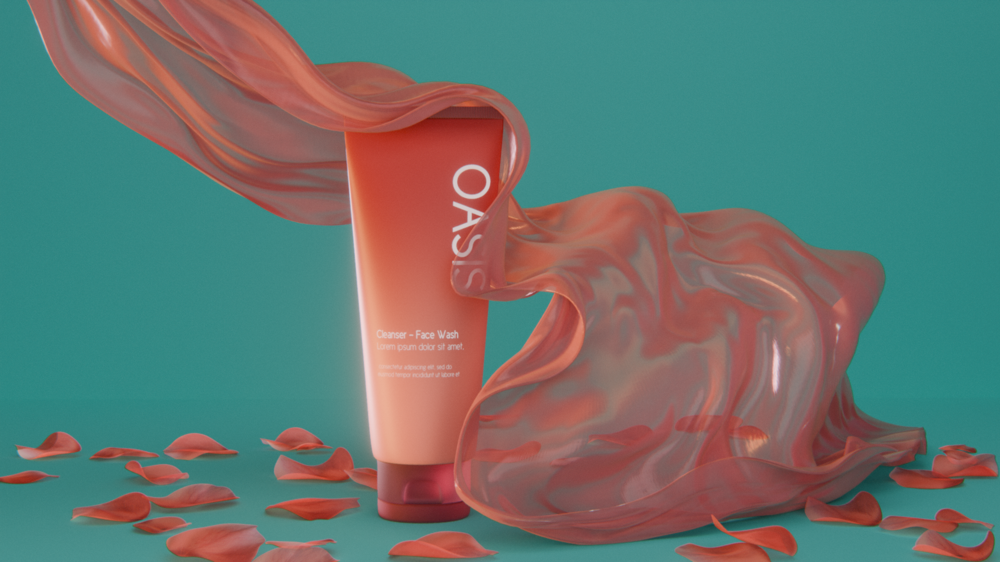
Oasis Cleanser
Beauty product
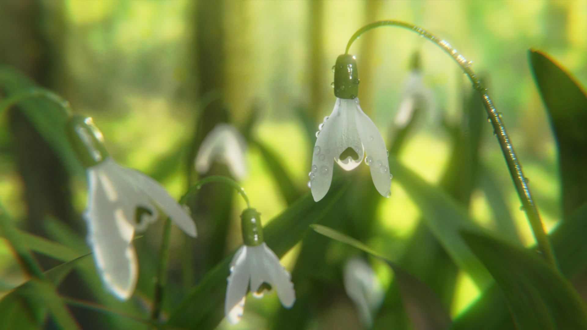
Snowdrops
Nature
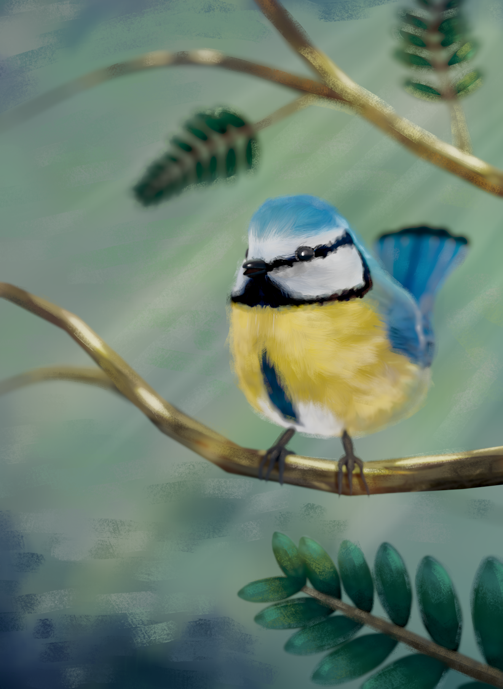

Blue Tit
Bird · render & geometry
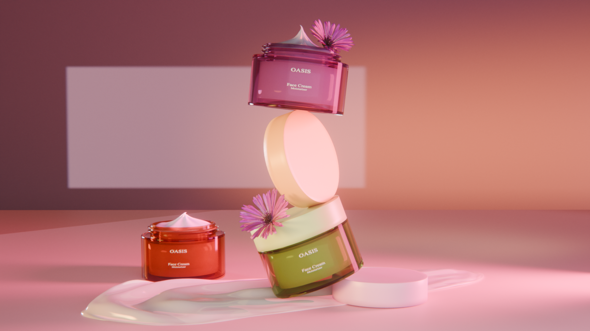
Oasis Face Cream
Beauty product
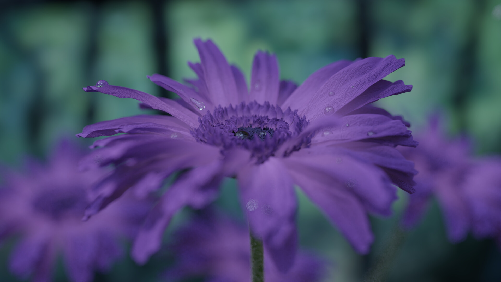
Purple Daisy
Nature
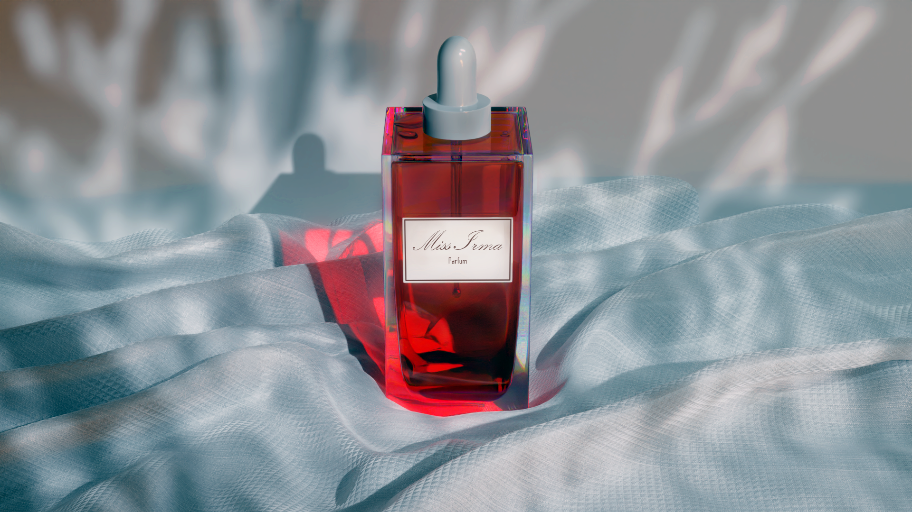
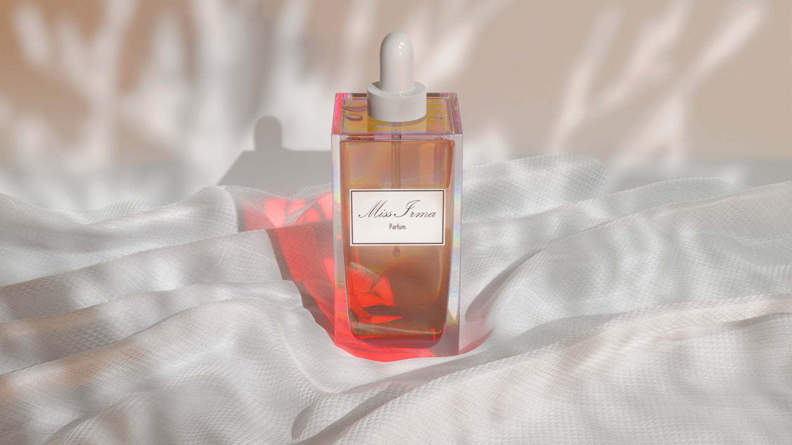
Miss Irma Parfum
Beauty product · cool & warm
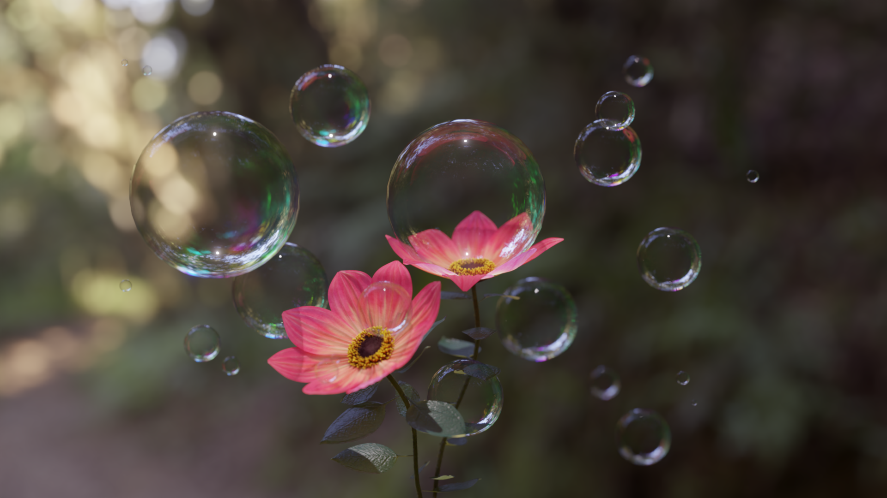
Bubble Bloom
Nature
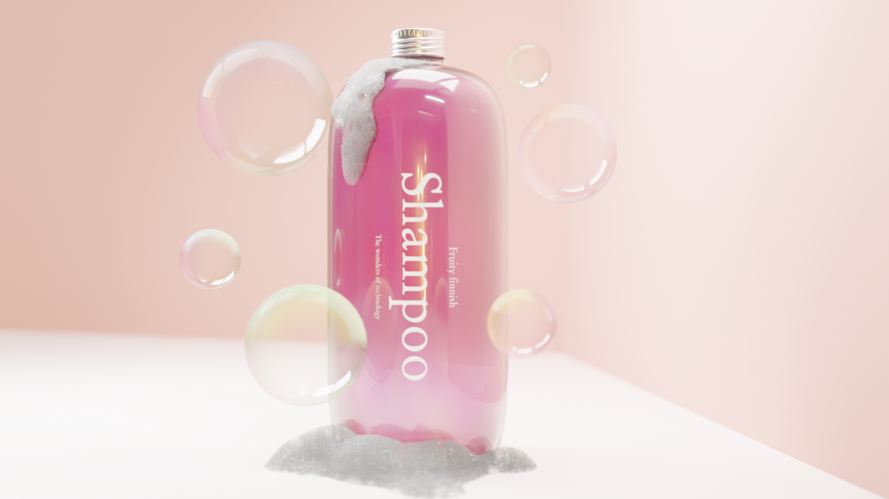
Fruity Finish
Beauty product
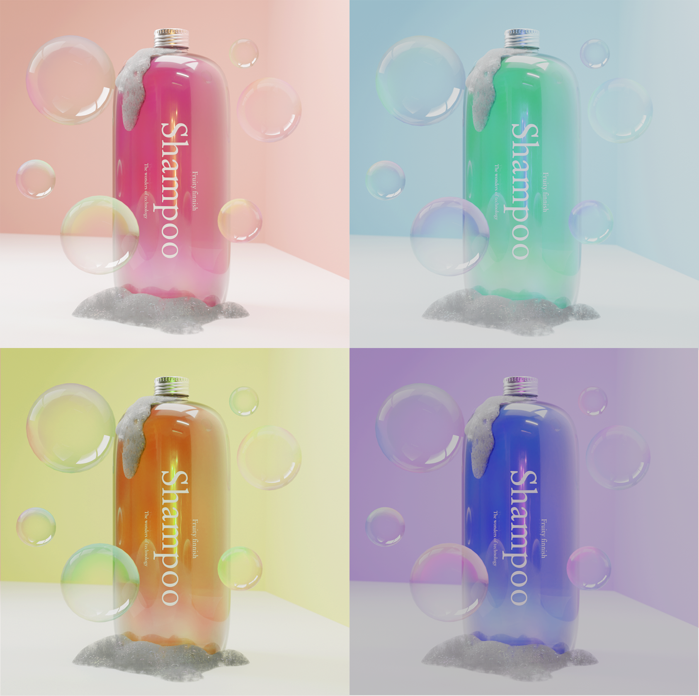
Fruity Finish — Colourways
Beauty product
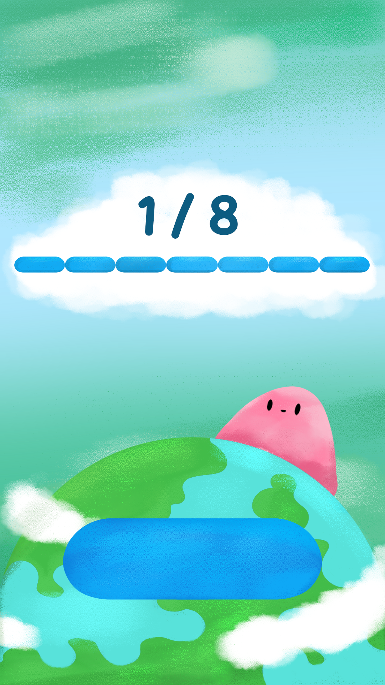
Drinki
App illustration
Fruit
Animation
September
Animation